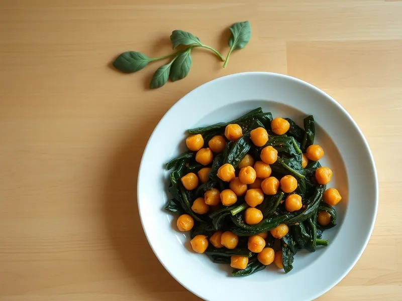

Нут со шпинатом по-испански с чесноком и паприкой
Испанское домашнее блюдо: нут и шпинат в соусе с чесноком, паприкой и зирой
20 мин2 порц.378 ккал на порциюБ 15 · Ж 19 · У 39Европейская кухня
Открыть в приложении: порции, таймеры, список покупок
Продукты на 2 порц.
- Нут1 банка
- Шпинат250 г
- Чеснок3 зуб.
- Оливковое масло2 ст. л.
- Паприка1 ч. л.
- Зира0,5 ч. л.
- Томатная паста1 ст. л.
- Вода100 мл
- Уксус 9%1 ч. л.
- Соль1 щеп.
Как готовить
- Нут из банки откиньте на дуршлаг. Чеснок нарежьте пластинками. Свежий шпинат промойте, замороженный не размораживайте.
- Разогрейте оливковое масло на среднем огне, обжарьте чеснок 1 минуту до светло-золотого цвета.
- Добавьте паприку, зиру и томатную пасту, перемешайте 30 секунд, чтобы специи раскрылись и не подгорели.
- Положите нут, влейте воду и уксус, посолите и тушите 5 минут, слегка раздавливая часть нута ложкой, чтобы соус загустел.
- Добавьте шпинат и прогревайте 3-5 минут, помешивая, пока листья не опадут и не станут тёмно-зелёными.
Совет. Раздавленный нут работает как загуститель вместо муки. Замороженный шпинат подойдёт так же хорошо, только выпарите лишнюю воду на 2 минуты дольше.